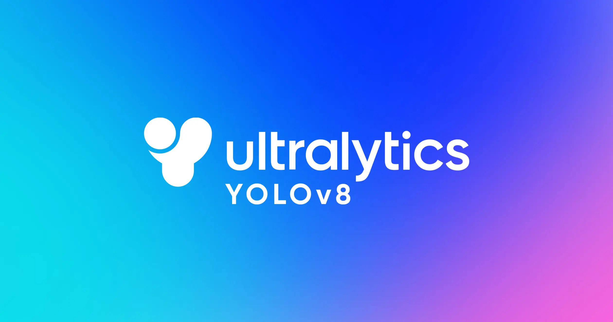
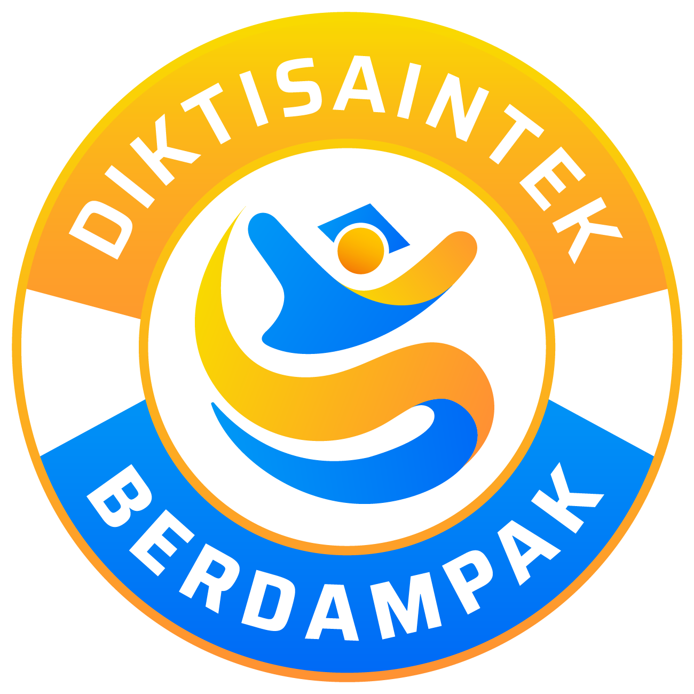

ZIDNI.
Projects
Contact
engineer 0.99
Laravel
Docker
YOLOv8
Faster R-CNN
_
Metro, ID

SC 0.98
SC 0.95
SC 0.91
Agri Object Detection
YOLOv8 • Faster R-CNN
DIGGIE AI Glossary
Laravel • Docker • Backend

GEMASTIK Rep
Business Dev • ICT